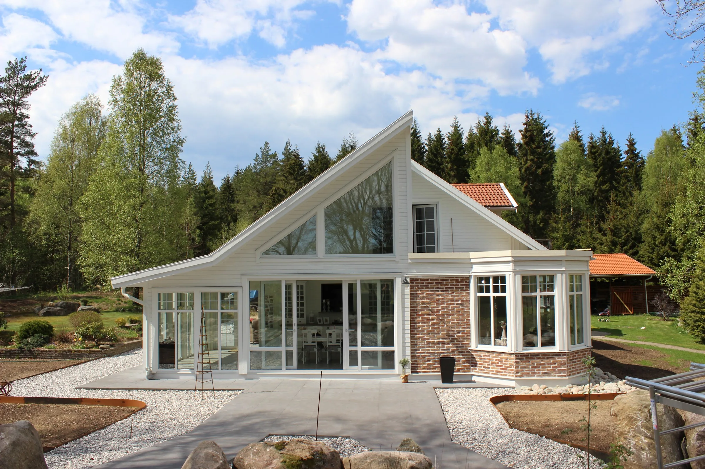
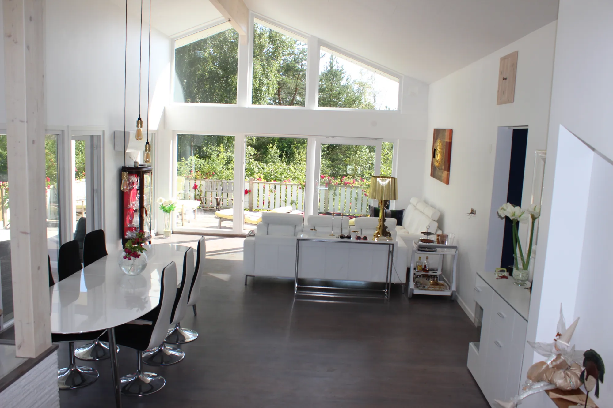

Utställning i Lilla Edet →Fönster som släpper in ljuset – och håller ute vädret
PVC är ett perfekt material för konstruktion – därför väljer allt fler PVC-fönster och dörrar i sina fastigheter. Energisnåla, underhållsfria och kostnadseffektiva.
Hög kvalitet och säkerhet – med ett framtidstänkande.
Våra fönster är energisnåla, underhållsfria och kostnadseffektiva. Vi tillhandahåller alla de glasalternativ som finns på marknaden.
Vi tillverkar fönster, balkongdörrar, skjutdörrar och kombinerade partier efter mått i vår fabrik i Lödöse, med lager och utställning i Lilla Edet. Vi erbjuder frakt och montering till rimlig kostnad – med ROT-avdrag.
Energisnåla
Femkammarprofiler förstärkta med metall och 2- eller 3-glas med argon. U-värde ned till 0,7 W/m²K i glaset.
Underhållsfria
Väder- och färgbeständiga profiler i tyskt, blyfritt material. Fönstren behöver aldrig målas – bara poleras.
Kostnadseffektiva
Direkt från fabrik, tillverkat efter mått. Frakt och montering till rimlig kostnad, med ROT-avdrag.
Vårt sortiment

Fönster
Energisnåla PVC-fönster med 2- eller 3-glas, dreh-kipp och specialformer.
Läs mer
Balkong- & altandörrar
Inåt- och utåtgående dörrar, pardörrar och källardörrar.
Läs mer
Skjutdörrar
Upp till 8 m breda och 2,5 m höga – vår storsäljare.
Läs mer
Kombinerade dörrar
Skjutdörr och svängdörr i samma parti – stor öppning.
Läs mer
Takfönster
Tyska ROTO-takfönster, motsvarighet till Velux.
Läs mer
Underhållsfria fasader
Fasadpanel i vinyl som aldrig behöver målas.
Läs mer
Persienner & rullgardiner
Persienner, rullgardiner och myggnät anpassade till fönstren.
Läs mer
Tillval
Glas, handtag och lås, spröjs och övriga tillbehör.
Läs merEtt material byggt för det svenska klimatet.
Profiler från VEKA, beslag från Roto och Winkhaus, handtag från Hoppe och glas från Press Glas.
Läs mer om PVC- Energibesparande
- Underhållsfria
- Lång livslängd
- Väderbeständiga
- Färgbeständiga
- Miljövänliga
- Ljudisolerande
- Måttbeställning
- Elegant design
- Hög säkerhet



Hustillverkning med SIP-element
Utöver fönster och dörrar bygger vi tillbyggnader, attefallshus och hela hus med egentillverkade SIP-moduler och underhållsfria fasader.
Se referenserBerätta vad du planerar – vi tar fram en offert.
Allt tillverkas på beställning i vår fabrik i Lödöse. Välkommen att besöka utställningen i Lilla Edet, eller skicka en förfrågan direkt.
- 0707-14 40 01
- info@fvab.se
- Göteborgsvägen 90, Lilla Edet